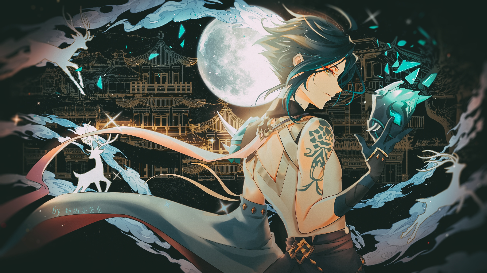
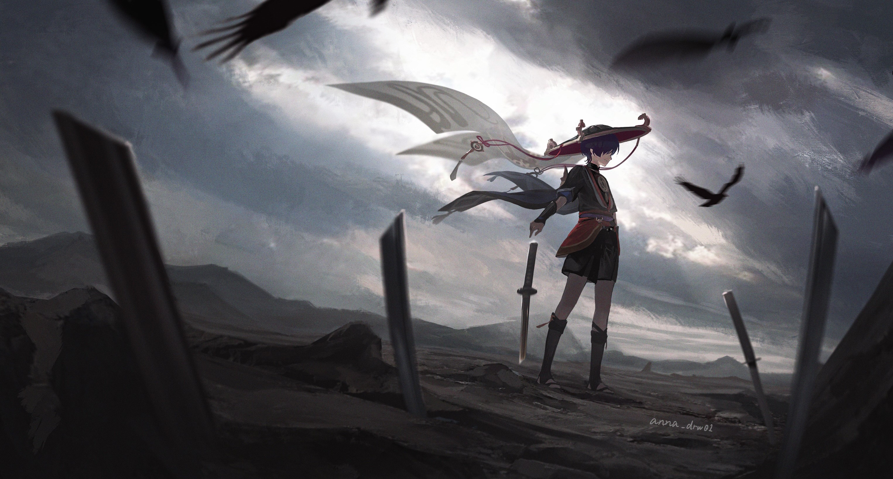

She is a half-qilin Adeptus under contract with the Geo Archon
Morax and serves as the general secretary of the Liyue Qixing.
SHUBHAM
GENSHIN IMPACT
Kaedehara Kazuha
A wandering samurai of the once-famed Kaedehara Clan with an
ability to read the sounds of nature, Kazuha is a temporary
crewmember of The Crux. Despite being burdened by the many
happenings of his past, Kazuha still maintains an easygoing
disposition.

SHUBHAM
GENSHIN IMPACT
Xiao
He is an adeptus, under the name Alatus, and the sole surviving
member of the five foremost Yakshas dispatched by Morax to subdue
the demonic spirits that plagued Liyue. He currently resides at
Wangshu Inn and mostly restrains himself from large crowds and
social interactions.

SHUBHAM
GENSHIN IMPACT
Wanderer
The Wanderer came into existence in place of his previous
incarnation after the latter expunged his previous appellations
and their respective histories from Irminsul. Harboring his former
self's memories after willingly regaining them, "Wanderer" is now
the only title he goes by, for he has no home, kin, or
destination.
Ganyu
She is a half-qilin Adeptus and secretary of the Liyue Qixing.
Kaedehara Kazuha
A wandering samurai of the once-famed Kaedehara Clan